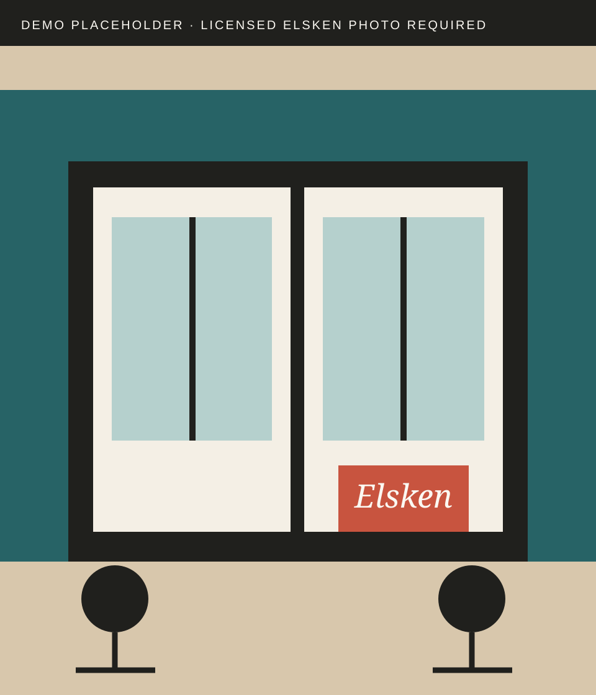
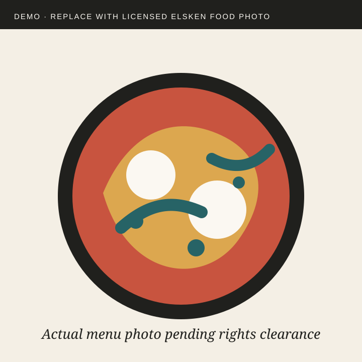
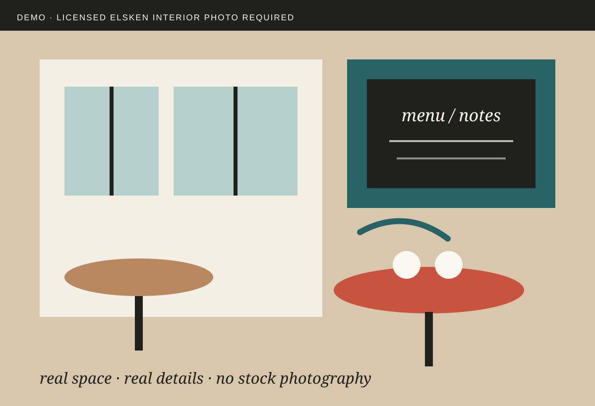
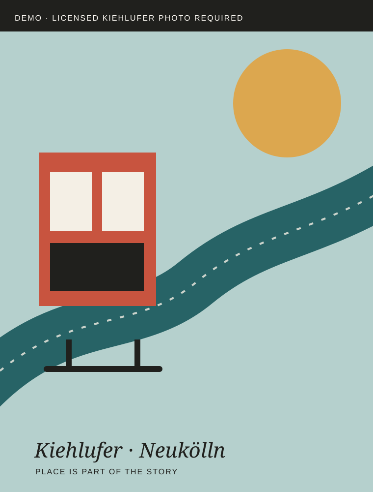

Hausgemacht
Der offizielle Instagram-Auftritt nennt hausgemachten Lunch und Kuchen als Kern des Angebots.
Kiehlufer 75 · Berlin-Neukölln
Hausgemachter Lunch, Kuchen, Specialty Coffee und Drinks. Am Wochenende gibt’s Frühstück & Brunch.


01 / Warum Elsken
Elsken beschreibt sich selbst als kleines, gemütliches Café in Neukölln. Genau darin liegt die Stärke: ein Ort für Kaffee, Essen und Zeit miteinander – direkt am Kiehlufer.
Seit dem Winter 2020/21 ist Elsken an dieser Adresse zu Hause. Öffentliche Hinweise aus dem Kiez und dem Kulturprogramm von 48 Stunden Neukölln zeigen: Der Laden ist nicht nur Gastronomie, sondern auch Teil seiner Nachbarschaft.
Der offizielle Instagram-Auftritt nennt hausgemachten Lunch und Kuchen als Kern des Angebots.
Elsken listet Specialty Coffee selbst als Angebot; Vote Coffee führt Elsken aktuell als Ort zum Kaffee trinken und Bohnen kaufen.
Das Café war 2026 Veranstaltungsort bei 48 Stunden Neukölln – ein belegbarer kultureller Anker im Kiez.
03 / Raum & Atmosphäre
Öffentliche Bewertungen wiederholen dieselben Motive: freundlicher Service, gemütliche Atmosphäre, Musik und ein persönliches Gefühl. Statt diese Stimmen als Werbezitate zu kopieren, übersetzt die Gestaltung sie in Rhythmus, Materialität und Ruhe.


04 / Im Kiez
2026 war Café Elsken offizieller Veranstaltungsort bei 48 Stunden Neukölln. Im selben Jahr fand dort auch ein Kiezgespräch rund um Kiehlufer und Harzer Kiez statt.
Das ist die glaubwürdigere Geschichte als eine erfundene „Community-first“-Claimsprache: Der Ort taucht tatsächlich in seinem kulturellen und nachbarschaftlichen Umfeld auf.
05 / Besuch
Barrierefreier Zugang und barrierefreies WC wurden für den 2026er Veranstaltungsort bei 48 Stunden Neukölln ausgewiesen.
Öffnungszeiten
10 → 18Öffnungszeiten vor Anfahrt am besten noch einmal auf Google/Instagram prüfen.